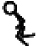
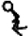

Posición 0
Posición 1
Posición 2
Posición 1
Posición 0
Posición 1
Contar hacia arriba
Contar hacia arriba
Contar hacia arriba
Cuenta atrás
Contar hacia abajo
Contar hacia arriba




En primer lugar, añadiremos la función animate , que tendrá que comprobar si hay movimiento y cambiar la imagen en consecuencia.
No queremos cambiar la imagen de la figura de palo demasiado rápido en nuestra animación, o su movimiento no parecerá realista. Piensa en una animación de volteo, dibujada en la esquina de un bloc de notas: si pasas las páginas demasiado deprisa, puede que no consigas el efecto completo de lo que has dibujado.
La primera mitad de la función animate comprueba si la figura de palo está corriendo hacia la izquierda o hacia la derecha, y luego utiliza la variable last_time para decidir si cambia la imagen actual. Esta variable nos ayudará a controlar la velocidad de nuestra animación. La función irá después de la función jump , que añadimos a nuestra clase StickFigureSprite en el Capítulo 15 ( página 238 ):
def animate(self): if self.x != 0 and self.y == 0: if time.time() - self.last_time > 0.1: self.last_time = time.time() self.current_image += self.current_image_add if self.current_image >= 2: self.current_image_add = -1 if self.current_image <= 0: self.current_image_add = 1
En la primera sentencia if , comprobamos si x no es 0 para determinar si la figura de palo se está moviendo (hacia la izquierda o hacia la derecha), y comprobamos si y es 0 para determinar que la figura de palo no está saltando. Si esta declaración if es True , tenemos que animar nuestra figura de palo; si no, está quieta, así que no hace falta seguir dibujando. Si la figura de palo no se mueve, abandonamos la función, y el resto del código de este listado se ignora.
A continuación, calculamos el tiempo transcurrido desde la última vez que se llamó a la función animate , restando el valor de la variable last_time del tiempo actual, mediante time.time() . Este cálculo se utiliza para decidir si se dibuja la siguiente imagen de la secuencia. Si el resultado es superior a una décima de segundo (0,1), continuamos con el bloque de código. Establecemos la variable last_time en el tiempo actual, básicamente reiniciando el cronómetro para empezar a cronometrar de nuevo el siguiente cambio de imagen.
A continuación, añadimos el valor de la variable objeto current_image_add a la variable current_image , que almacena la posición del índice de la imagen mostrada actualmente. Recuerda que creamos la variable current_image_add en la función __init__ de la figura de palo en el Capítulo 15 (ver página 235 ), de modo que cuando se llama por primera vez a la función animate , el valor de la variable ya se ha establecido en 1.
A continuación, comprobamos si el valor de la posición del índice en current_image es mayor o igual que 2; si es así, cambiamos el valor de current_image_add a -1. El proceso es similar para las dos últimas líneas; una vez que llegamos a 0, tenemos que volver a empezar a contar.
Nota
Si tienes problemas para averiguar cómo sangrar este código, aquí tienes una pista: hay 8 espacios en la línea que comienza if self.x y 20 espacios en la última línea.
Para ayudarte a entender lo que ocurre en la función hasta ahora, imagina que tienes una secuencia de bloques de colores en una línea en el suelo. Mueves el dedo de un bloque al siguiente, y cada bloque al que apunta tu dedo tiene un número (1, 2, 3, 4, etc.): ésta es la variable current_image . El número del bloque al que se mueve tu dedo (apunta a un bloque cada vez) es el número almacenado en la variable current_image_add . Cuando tu dedo se mueve hacia arriba en la línea de bloques, estás sumando 1 cada vez, y cuando llega al final de la línea y se mueve hacia abajo, estás restando 1 (sumando -1).
El código que hemos añadido a nuestra función animate realiza este proceso, pero en lugar de bloques de colores, tenemos las tres imágenes de figuras de palo para cada dirección almacenadas en una lista. Las posiciones índice de estas imágenes son 0, 1 y 2. Al animar la figura de palitos, cuando llegamos a la última imagen, empezamos a contar hacia abajo, y cuando llegamos a la primera imagen, tenemos que volver a contar hacia arriba. Como resultado, creamos el efecto de una figura que corre.
La Tabla 16-1 muestra cómo nos movemos por la lista de imágenes, utilizando las posiciones índice que calculamos en la función animate .
Tabla16-1: Posiciones de las imágenes en la animación
|
Posición 0 |
Posición 1 |
Posición 2 |
Posición 1 |
Posición 0 |
Posición 1 |
|---|---|---|---|---|---|
|
Contar hacia arriba |
Contar hacia arriba |
Contar hacia arriba |
Cuenta atrás |
Contar hacia abajo |
Contar hacia arriba |
|
|
|
|
|

|
|
En la siguiente mitad de la función animate , cambiamos la imagen mostrada actualmente, utilizando la posición del índice calculado:
def animate(self): ... if self.x < 0: if self.y != 0: self.game.canvas.itemconfig(self.image, image=self.images_left[2]) ➊ else: self.game.canvas.itemconfig(self.image, image=self.images_left[self.current_image]) elif self.x > 0: if self.y != 0: self.game.canvas.itemconfig(self.image, image=self.images_right[2]) else: self.game.canvas.itemconfig(self.image, image=self.images_right[self.current_image])
En primer lugar, si x es menor que 0, la figura de palo se está moviendo hacia la izquierda, por lo que Python pasa al bloque de código que comprueba si y no es igual a 0 (lo que significa que la figura de palo está saltando). Si y no es igual a 0 (la figura del palo está saltando), utilizamos la función itemconfig del lienzo para cambiar la imagen mostrada a la última imagen de nuestra lista de imágenes orientadas a la izquierda en images_left[2] . Como la figura de palo está saltando, utilizaremos la imagen que le muestra en plena zancada para que la animación parezca un poco más realista, como puedes ver en la Figura 16-1 .

Figura16-1: Imágenes de salto
Si la figura de palo no está saltando (es decir, y es igual a 0), el bloque else ➊ utiliza itemconfig para cambiar la imagen mostrada a cualquier posición de índice que esté en la variable current_image .
En la declaración elif , vemos si la figura de palo se está ejecutando correctamente ( x es mayor que 0), y Python pasa al bloque de código. Este código es muy similar al del primer bloque, de nuevo comprobando si la figura de palo está saltando y dibujando la imagen correcta en caso afirmativo, salvo que utiliza la lista images_right .